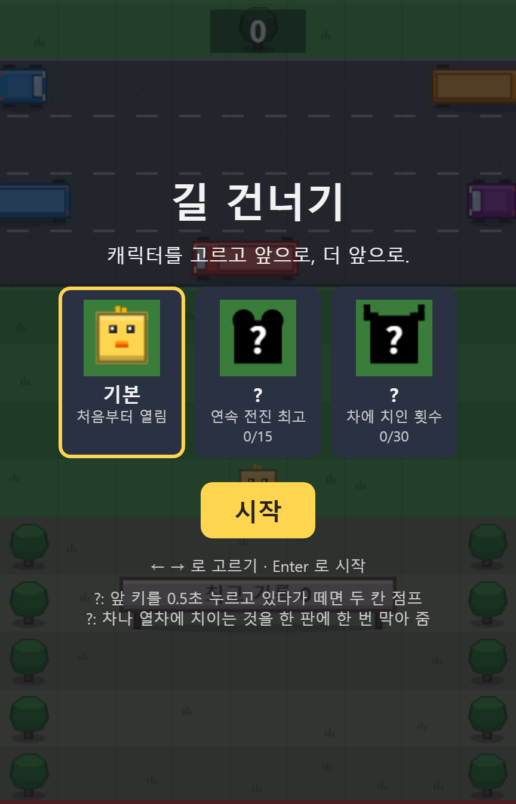
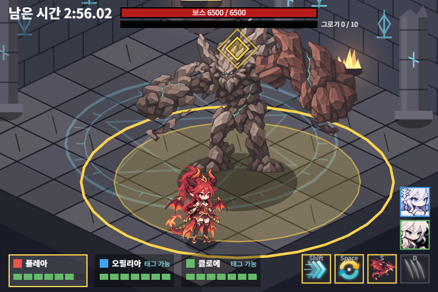
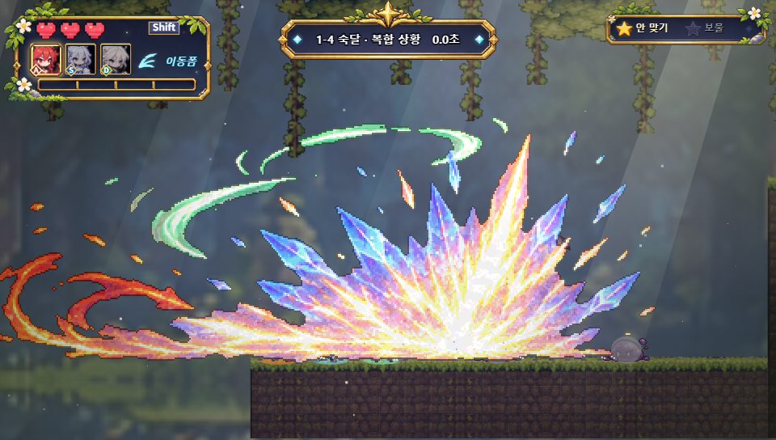

01CLEAR
게임 1 · 완전 카피
길 건너기
한 칸씩 길을 건너는 무한 진행 게임을 그대로 따라 만들며, AI와 일하는 규칙과 기록하는 습관을 세웠습니다.
코딩을 처음 하는 사람이 AI(Claude Code)에게 코드를 맡기고, 무엇을 만들지와 됐는지는 직접 정하며 한 판 30초~3분짜리 게임 셋을 차례로 끝까지 만들었습니다.
완전 카피 → 큰 게임의 일부 → 창작 데모를 지나며 AI를 쓰는 방식이 어떻게 자랐는지 한 장에 모았습니다.

01CLEAR한 칸씩 길을 건너는 무한 진행 게임을 그대로 따라 만들며, AI와 일하는 규칙과 기록하는 습관을 세웠습니다.

02CLEAR
03CLEAR앞의 두 게임에서 확인한 태그의 재미로, 세 캐릭터를 태그로 이어 길을 여는 2D 도트 플랫포머를 만들었습니다.
게임 하나를 끝낼 때마다 회고로 다음 게임에서 다르게 할 것을 정했고, 그 결과가 다음 게임의 일하는 방식이 되었습니다.
게임 2·3은 몬길: 스타다이브의 캐릭터 콘셉트를 차용한 비영리 창작물이며, 원작의 그림과 소리는 사용하지 않았습니다. 모든 게임은 PC 키보드로 플레이합니다.